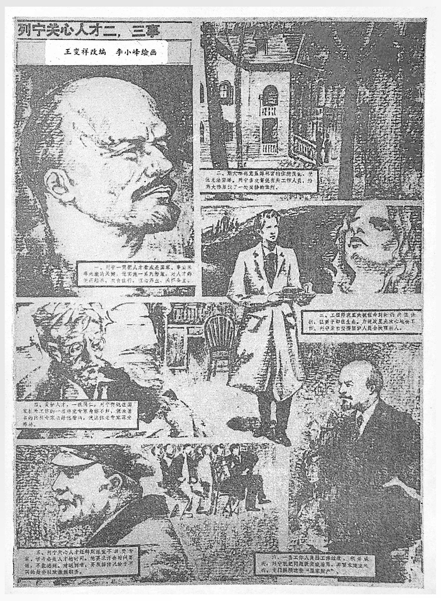

李小峰绘画；王变祥改编 《人事》1987年第1期（总第16期），封三
列宁关心人才二、三事
Two or Three Stories of Lenin's Care for Talent
- Panel text
- （第一格说明文字在扫描件中无法辨认）
[Caption for panel 一 illegible in the scan.] - （第二格说明文字在扫描件中无法辨认）
[Caption for panel 二 illegible in the scan.] - （第三格说明文字在扫描件中无法辨认）
[Caption for panel 三 illegible in the scan.] - （第四格说明文字在扫描件中无法辨认）
[Caption for panel 四 illegible in the scan.] - （第五格说明文字在扫描件中无法辨认）
[Caption for panel 五 illegible in the scan.] - （第六格说明文字在扫描件中无法辨认）
[Caption for panel 六 illegible in the scan.]
- （第一格说明文字在扫描件中无法辨认）
- Description
- Six-panel picture story on Lenin's care for talented people, drawn after photographs: Lenin's portrait, a house, a man in a long coat, a crowd. The numbered captions are too degraded in this scan to transcribe.
- Note
- The caption text could not be read reliably, so it is not transcribed. Panel 4 appears to begin 四、爱护人才，一视同仁 (“4. Cherishing talent, treating all alike”).
- Artists
- Li Xiaofeng 李小峰 (drawn); Wang Bianxiang 王变祥 (adapted)
- Published in
- 《人事》1987年第1期（总第16期）, inside back cover
- Themes
- Talent and its neglect · Exemplary history · Picture stories (连环画)

Cite
Li Xiaofeng and Wang Bianxiang, “列宁关心人才二、三事” [Two or Three Stories of Lenin's Care for Talent], Renshi (Personnel) 《人事》, 1987, no. 1, inside back cover.